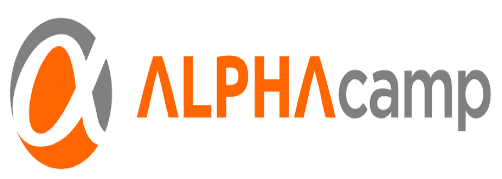

我 想 加 入 愛料理

我想加入ALPHA Camp，而且我認為我有能力擔任行銷助理一職
從今年年初開始，因為想將在學校內做的服務拓展並使之更具體地呈現，因此開始自學並找老師學習基本之HTML、CSS等程式，並慢慢了解以前端為主的其他語言。在這過程裡認識到ALPHA Camp，了解ALPHA Camp所教導之課程後，便相當期待未來能有機會加入實戰營的帶領，加強自己編寫程式能力，同時對於ALPHA Camp正在進行的計畫與教育課程深深支持，相信未來ALPHA Camp會成為臺灣網路新創不可或缺的一環，正因如此，讓我相當期盼能加入ALPHA Camp學習並貢獻一己之力。
我渴望能加入ALPHA Camp，希望透過以往在活動上的經驗來協助，或許活動類型及流程更加複雜與精細，但我相信可以從中學習並協助大小型Bootcamp、seminar之推廣與進行。
而平日除了在校內修習商學課程中外，我也相當熱愛追蹤各類科技、網路、創業、Maker等等之最新新聞。追蹤這些消息已經形成我的例行工作， TechCrunch、The Verge、36氪、Inside等都會隨機瀏覽，此外自己也相當喜歡ProductHunt、Sidebar這些每天更新 的工具或startup資訊。我認為這些內容都相當有趣且實用，有助於拓展對產業的視野。所以我相信新創資訊的蒐集我從來不會落後於其他人，未來在ALPHA Camp也期待能與自己所獲知的達到相輔相乘的作用
也因為對網路、創業議題的熱忱，自今年開始自學HTML , CSS , JavaScript等語言，而此個人官網即是透過這些工具自行建立的，也從中挖掘出自己的一份興趣。 且透過codecademy等教學網站、以及各種網路上的資訊自己主動學習。雖然我自己並非就讀資訊相關科系，但深信未來會越來越需要透過各類電腦程式來運作，也期待自己能培養足夠的能力。
我們在校園中的學習，每周必須有固定的個案討論、報告，因此對於表達及團隊合作我相信有足夠的能力。 也曾有Google Adwords操作之經驗，透過具實際經驗之講師教導後，自行尋找店家並為其推廣。過去也有長期經營粉絲頁的能力，能協助粉絲頁之管理，並嘗試將過去在專欄撰稿之能力結合，為ALPHA Camp的行銷推廣提供助力，讓更多人願意且深入了解ALPHA Camp的目標與努力
最後感謝您願意撥空瀏覽我的履歷，我相當渴望能獲得這次的實習機會，期待未來能進入ALPHA Camp擔任行銷助理。也再次謝謝您，期待您的回覆。